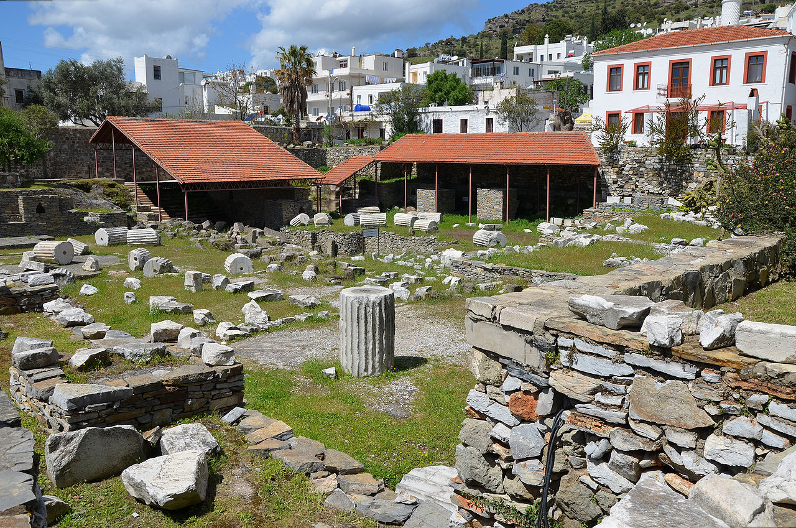

MAUSOLEUM AT HALICARNASSUS

The Mausoleum at Halicarnassus or Tomb of Mausolus was a tomb built between 353 and 350 BC at Halicarnassus (present Bodrum, Turkey) for Mausolus, a satrap in the Persian Empire, and his sister-wife Artemisia II of Caria. The structure was designed by the Greek architects Satyros and Pythius of Priene.[1][2]
The Mausoleum was approximately 45 m (148 ft) in height, and the four sides were adorned with sculptural reliefs, each created by one of four Greek sculptors—Leochares, Bryaxis, Scopas of Paros and Timotheus.[3] The finished structure of the mausoleum was considered to be such an aesthetic triumph that Antipater of Sidon identified it as one of his Seven Wonders of the Ancient World. It was destroyed by successive earthquakes from the 12th to the 15th century,[4][5][6] the last surviving of the six destroyed wonders.
The word mausoleum has now come to be used generically for an above-ground tomb.
In the 4th century BC, Halicarnassus was the capital of a small regional kingdom within the Achaemenid Empire on the western coast of Asia Minor. In 377 BC, the nominal ruler of the region, Hecatomnus of Milas, died and left the control of the kingdom to his son, Mausolus. Hecatomnus, a local satrap under the Persians, took control of several of the neighboring cities and districts. After Artemisia and Mausolus, he had several other daughters and sons: Ada (adoptive mother of Alexander the Great), Idrieus and Pixodarus. Mausolus extended its territory as far as the southwest coast of Anatolia. Artemisia and Mausolus ruled from Halicarnassus over the surrounding territory for 24 years. Mausolus, although descended from local people, spoke Greek and admired the Greek way of life and government. He founded many cities of Greek design along the coast and encouraged Greek democratic traditions.
It is likely that Mausolos started to plan the tomb before his death, as part of the building works in Halicarnassus, and that when he died Artemisia continued the building project. Artemisia spared no expense in building the tomb. She sent messengers to Greece to find the most talented artists of the time. These included Scopas, the man who had supervised the rebuilding of the Temple of Artemis at Ephesus. The famous sculptors were (in the Vitruvius order): Leochares, Bryaxis, Scopas, and Timotheus, as well as hundreds of other craftsmen.
The tomb was erected on a hill overlooking the city. The whole structure sat in an enclosed courtyard. At the center of the courtyard was a stone platform on which the tomb sat. A stairway flanked by stone lions led to the top of the platform, which bore along its outer walls many statues of gods and goddesses. At each corner, stone warriors mounted on horseback guarded the tomb. At the center of the platform, the marble tomb rose as a square tapering block to one-third of the Mausoleum's 45 m (148 ft) height. This section was covered with bas-reliefs showing action scenes, including the battle of the centaurs with the lapiths and Greeks in combat with the Amazons, a race of warrior women.
On the top of this section of the tomb thirty-six slim columns, ten per side, with each corner sharing one column between two sides; rose for another third of the height. Standing between each pair of columns was a statue. Behind the columns was a solid cella-like block that carried the weight of the tomb's massive roof. The roof, which comprised most of the final third of the height, was pyramidal. Perched on the top was a quadriga: four massive horses pulling a chariot in which rode images of Mausolus and Artemisia.
Back to